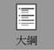

|
行號 |
標籤 |
題目 |
選項1 |
選項2 |
選項3 |
選項4 |
選項5 |
題尾 |
答案 |
解析 |
來源 |
|
1 |
T2D1 010201 1 197001 |
下列何者非PowerPoint 2016狀態列具備的功能？ |
投影片頁數 |
檢視模式 |
顯示比例 |
投影片錄製 |
|
|
D |
|
|
|
2 |
T2D1 010201 1 197002 |
若想檢視所有的投影片縮圖，以調整投影片順序或設定放映效果等，應切換至下列何種檢視模式？ |
|
|
|
|
|
|
C |
|
|
|
3 |
T2D2 010201 1 197003 |
下列有關Microsoft PowerPoint的敘述，何者正確？ |
PowerPoint檔案可以存成.jpg或.png圖片檔 |
PowerPoint提供的母片有投影片母片、備忘稿母片以及大綱母片三種 |
.pps是一種PowerPoint範本檔的格式 |
我們先設定某些投影片後，接著再修改投影片母片的設定，則投影片母片的新設定都會套用到所有的投影片上 |
|
|
A |
|
[歷] |
|
4 |
T2D1 010202 1 197004 |
要美化簡報中的文字，下列哪項功能最適合？ |
段落間距與行距 |
項目符號及編號 |
文字藝術師 |
佈景主題 |
|
|
C |
|
|
|
5 |
T2D1 010202 1 197005 |
簡報軟體(Powerpoint)中的母片類別，不包含下列哪一種？ |
自訂簡報及備忘稿一併列印為講義時的外觀之備忘稿母片 |
自訂簡報在播放投影片的外觀之播放母片 |
自訂簡報在列印為講義時的外觀之講義母片 |
用於控制整個簡報的外觀之投影片母片 |
|
|
B |
|
[歷] |
|
6 |
T2D2 010204 1 197006 |
若想在投影片中讓文字產生波浪的效果，應使用何種功能？ |
加入SmartArt圖形 |
套用動畫 |
套用佈景主題 |
套用轉場效果 |
|
|
B |
|
|
|
7 |
T2D3 010205 1 197007 |
小青要從有統計圖表的PowerPoint檔案中印一份沒有圖表的簡報資料給老闆，小青開啟該PowerPoint檔案後，按「檔案」、「列印」，再來請你幫小青選擇以下哪一個圖案來完成此任務。 |
 |
|
|
|
|
|
A |
|
[歷] |
|
8 |
T2D2 010205 1 197008 |
有關Microsoft
PowerPoint簡報軟體的操作，下列敘述何者錯誤？ |
簡報中的圖片可以設定超連結 |
每張投影片可以設定不同的自動播放時間 |
簡報時必須依投影片順序來播放 |
在Microsoft Word中進行字串複製後，可以直接在Microsoft PowerPoint中貼上 |
|
|
C |
|
[歷] |
|
9 |
T2D3 010202 1 198009 |
使用Microsoft PowerPoint簡報軟體，若在投影片母片中設定標題文字為紅色，接著在第5張投影片中設定標題文字為白色，最後又在投影片母片中設定標題文字為黑色，完成以上設定後的第5張投影片中標題文字為哪種顏色？ |
灰色 |
黑色 |
紅色 |
白色 |
|
|
D |
|
[歷] |
|
10 |
T2D2 010204 1 198010 |
下列有關PowerPoint中插入音訊物件的說明，何者不正確？ |
插入單張投影片的聲音物件，無法設定為循環播放 |
連結的聲音檔案如果變更路徑將無法正常播放 |
可以設定自動或按一下時播放 |
可以插入的聲音檔案格式包括wav、mp3等 |
|
|
A |
|
[歷] |
|
11 |
T2D1 010204 1 198011 |
下列關於簡報軟體(PowerPoint)的敘述，何者錯誤？ |
在PowerPoint中可以設定投影片切換時的聲音 |
在設定物件動畫時，無法進行動畫速度快慢的設定 |
在PowerPoint中可以將簡報儲存成PNG圖檔 |
在列印投影片時，可以選擇講義模式列印 |
|
|
B |
|
[歷] |
|
12 |
T2D2 010201 1 198012 |
開啟簡報時若要直接進入放映模式，簡報檔案應儲存為何種格式？ |
.potx |
.ppsx |
.odp |
.pptx |
|
|
B |
|
|
|
13 |
T2D2 010205 1 198013 |
若在不同的場合中播放簡報，能有不同的放映組合，應使用以下何種功能？ |
排練計時 |
設定轉場效果 |
設定投影片放映 |
自訂放映 |
|
|
D |
|
|
|
14 |
T2D1 010204 1 198014 |
以下哪一個可「模擬按鈕效果」？ |
Smart動畫 |
自訂動畫 |
動作按鈕 |
美工圖案 |
|
|
C |
|
|
|
15 |
T2D3 010202 1 198015 |
想要在特定版面配置投影片中更換佈景主題，以下何者正確？ |
直接點選設計佈景主題樣式 |
選取欲修改的投影片，在佈景主題樣式上按右鍵，「套用至選定的投影片」 |
母片工具à佈景主題à主題樣式上按右鍵，「套用至選定的投影片母片」 |
以上皆是 |
|
|
C |
|
|